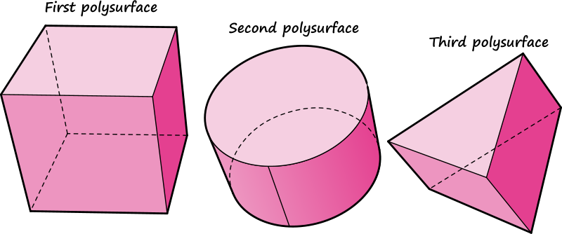
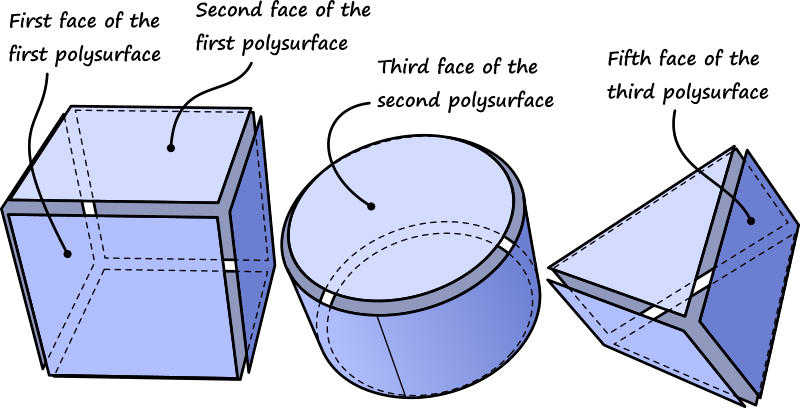
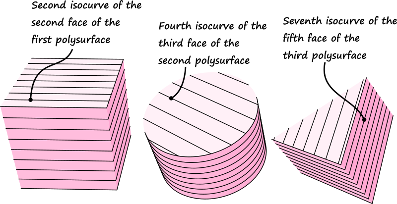
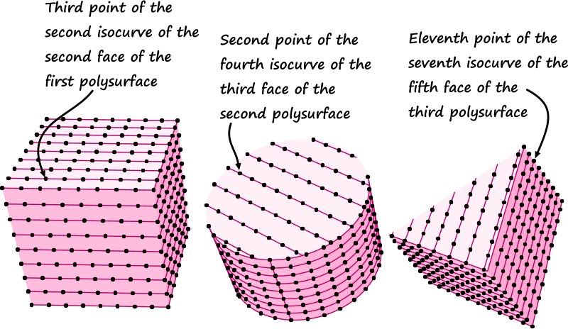
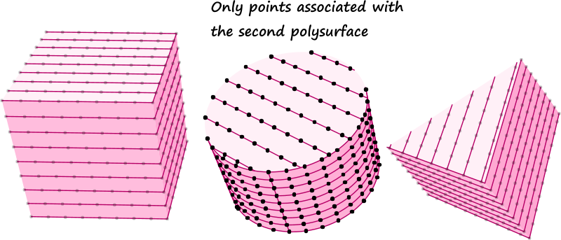
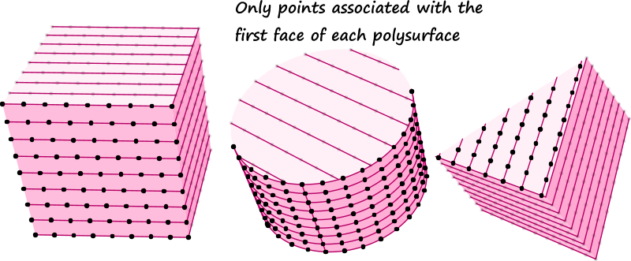
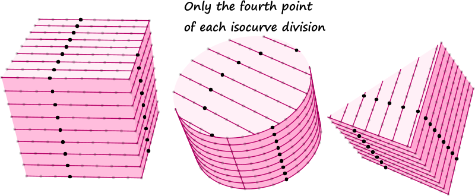

Data storage in general programming
One of the key aspects of programming is deciding how and where to store your data. If you’re writing textual code using any one of a huge number of programming languages there are a lot of different options, each with its own benefits and drawbacks. Sometimes you just need to store a single data point. At other times you may need a list of exactly one hundred data points. At other times still circumstances may demand a list of a variable number of data points.
In programming jargon, lists and arrays are typically used to store an ordered collection of data points, where each item is directly accessible. Bags and hash sets are examples of unordered data storage. These storage mechanisms do not have a concept of which data comes first and which next, but they are much better at searching the data set for specific values. Stacks and queues are ordered data structures where only the youngest or oldest data points are accessible respectively. These are popular structures for code designed to create and execute schedules. Linked lists are chains of consecutive data points, where each point knows only about its direct neighbours. As a result, it’s a lot of work to find the one-millionth point in a linked list, but it’s incredibly efficient to insert or remove points from the middle of the chain. Dictionaries store data in the form of key-value pairs, allowing one to index complicated data points using simple lookup codes.
The above is a just a small sampling of popular data storage mechanisms, there are many, many others. From multidimensional arrays to SQL databases. From readonly collections to concurrent k-dTrees. It takes a fair amount of knowledge and practice to be able to navigate this bewildering sea of options and pick the best suited storage mechanism for any particular problem. We did not wish to confront our users with this plethora of programmatic principles, and instead decided to offer only a single data storage mechanism.1
Data storage in Grasshopper
In order to see what mechanism would be optimal for Grasshopper, it is necessary to first list the different possible ways in which components may wish to access and store data, and also how families of data points flow through a Grasshopper network, often acquiring more complexity over time.
-
A lot of components operate on individual values and also output individual values as results. This is the simplest category, let’s call it
1:1(pronounced as “one to one”, indicating a mapping from single inputs to single outputs). Two examples of1:1components are Subtraction and Construct Point. Subtraction takes two arguments on the left (A and B), and outputs the difference (A-B) to the right. Even when the component is called upon to calculate the difference between two collections of 12 million values each, at any one time it only cares about three values; A, B and the difference between the two. Similarly, Construct Point takes three separate numbers as input arguments and combines them to form a single xyz point. -
Another common category of components create lists of data from single input values. We’ll refer to these components as
1:N. Range and Divide Curve are oft used examples in this category. Range takes a single numeric domain and a single integer, but it outputs a list of numbers that divide the domain into the specified number of steps. Similarly, Divide Curve requires a single curve and a division count, but it outputs several lists of data, where the length of each list is a function of the division count. -
The opposite behaviour also occurs. Common
N:1components are Polyline and Loft, both of which consume a list of points and curves respectively, yet output only a single curve or surface. -
Lastly (in the list category),
N:Ncomponents are also available. A fair number of components operate on lists of data and also output lists of data. Sort and Reverse List are examples of N:N components you will almost certainly encounter when using Grasshopper. It is true thatN:Ncomponents mostly fall into the data management category, in the sense that they are mostly employed to change the way data is stored, rather than to create entirely new data, but they are common and important nonetheless. -
A rare few components are even more complex than
1:N,N:1, orN:N, in that they are not content to operate on or output single lists of data points. The Divide Surface and Square Grid components want to output not just lists of points, but several lists of points, each of which represents a single row or column in a grid. We can refer to these components as1:N'orN':1orN:N'or … depending on how the inputs and outputs are defined.
The above listing of data mapping categories encapsulate all components that ship with Grasshopper, though they do not necessarily minister to all imaginable mappings. However in the spirit of getting on with the software it was decided that a data structure that could handle individual values, lists of values, and lists of lists of values would solve at least 99% of the then existing problems and was thus considered to be a ‘good thing’.
Data storage as the outcome of a process
If the problems of 1:N' mappings only occurred in those few components to do with grids, it would probably not warrant support for lists-of-lists in the core data structure. However, 1:N' or N:N' mappings can be the result of the concatenation of two or more 1:N components. Consider the following case: A collection of three polysurfaces (a box, a capped cylinder, and a triangular prism) is imported from Rhino into Grasshopper. The shapes are all exploded into their separate faces, resulting in 6 faces for the box, 3 for the cylinder, and 5 for the prism. Across each face, a collection of isocurves is drawn, resembling a hatching. Ultimately, each isocurve is divided into equally spaced points.




This is not an unreasonably elaborate case, but it already shows how shockingly quickly layers of complexity are introduced into the data as it flows from the left to the right side of the network.
It’s no good ending up with a single huge list containing all the points. The data structure we use must be detailed enough to allow us to select from it any logical subset. This means that the ultimate data structure must contain a record of all the mappings that were applied from start to finish. It must be possible to select all the points that are associated with the second polysurface, but not the first or third. It must also be possible to select all points that are associated with the first face of each polysurface, but not any subsequent faces. Or a selection which includes only the fourth point of each division and no others.



The only way such selection sets can be defined, is if the data structure contains a record of the “history” of each data point. I.e. for every point we must be able to figure out which original shape it came from (the cube, the cylinder or the prism), which of the exploded faces it is associated with, which isocurve on that face was involved and the index of the point within the curve division family.
A flexible mechanism for variable history records
The storage constraints mentioned so far (to wit, the requirement of storing individual values, lists of values, and lists of lists of values), combined with the relational constraints (to wit, the ability to measure the relatedness of various lists within the entire collection) lead us to Data Trees. The data structure we chose is certainly not the only imaginable solution to this problem, and due to its terse notation can appear fairly obtuse to the untrained eye. However since data trees only employ non-negative integers to identify both lists and items within lists, the structure is very amenable to simple arithmetic operations, which makes the structure very pliable from an algorithmic point of view.
A data tree is an ordered collection of lists. Each list is associated with a path, which serves as the identifier of that list. This means that two lists in the same tree cannot have the same path. A path is a collection of one or more non-negative integers. Path notation employs curly brackets and semi-colons as separators. The simplest path contains only the number zero and is written as: {0}. More complicated paths containing more elements are written as: {2;4;6}. Just as a path identifies a list within the tree, an index identifies a data point within a list. An index is always a single, non-negative integer. Indices are written inside square brackets and appended to path notation, in order to fully identify a single piece of data within an entire data tree: {2,4,6}[10].
Since both path elements and indices are zero-based (we start counting at zero, not one), there is a slight disconnect between the ordinality and the cardinality of numbers within data trees. The first element equals index 0, the second element can be found at index 1, the third element maps to index 2, and so on and so forth. This means that the “Eleventh point of the seventh isocurve of the fifth face of the third polysurface” will be written as {2;4;6}[10]. The first path element corresponds with the oldest mapping that occurred within the file, and each subsequent element represents a more recent operation. In this sense the path elements can be likened to taxonomic identifiers. The species {Animalia;Mammalia;Hominidea;Homo} and {Animalia;Mammalia;Hominidea;Pan} are more closely related to each other than to {Animalia;Mammalia; Cervidea;Rangifer}2 because they share more codes at the start of their classification. Similarly, the paths {2;4;4} and {2;4;6} are more closely related to each other than they are to {2;3;5}.
The messy reality
Although you may agree with me that in theory the data tree approach is solid, you may still get frustrated at the rate at which data trees grow more complex. Often Grasshopper will choose to add additional elements to the paths in a tree where none in fact is needed, resulting in paths that all share a lot of zeroes in certain places. For example a data tree might contain the paths:
{0;0;0;0;0}
{0;0;0;0;1}
{0;0;0;0;2}
{0;0;0;0;3}
{0;0;1;0;0}
{0;0;1;0;1}
{0;0;1;0;2}
{0;0;1;0;3}
instead of the far more economical:
{0;0}
{0;1}
{0;2}
{0;3}
{1;0}
{1;1}
{1;2}
{1;3}
The reason all these zeroes are added is because we value consistency over economics. It doesn’t matter whether a component actually outputs more than one list, if the component belongs to the 1:N, 1:N', or N:N' groups, it will always add an extra integer to all the paths, because some day in the future, when the inputs change, it may need that extra integer to keep its lists untangled. We feel it’s bad behaviour for the topology of a data tree to be subject to the topical values in that tree. Any component which relies on a specific topology will no longer work when that topology changes, and that should happen as seldom as possible.
Conclusion
Although data trees can be difficult to work with and probably cause more confusion than any other part of Grasshopper, they seem to work well in the majority of cases and we haven’t been able to come up with a better solution. That’s not to say we never will, but data trees are here to stay for the foreseeable future.
Footnotes
-
This is not something we hit on immediately. The very first versions of Grasshopper only allowed for the storage of a single data point per parameter, making operations like [Loft] or [Divide Curve] impossible. Later versions allowed for a single list per parameter, which was still insufficient for all but the most simple algorithms. ↩︎
-
I’m skipping a lot of taxonometric classifications here to keep it simple. ↩︎